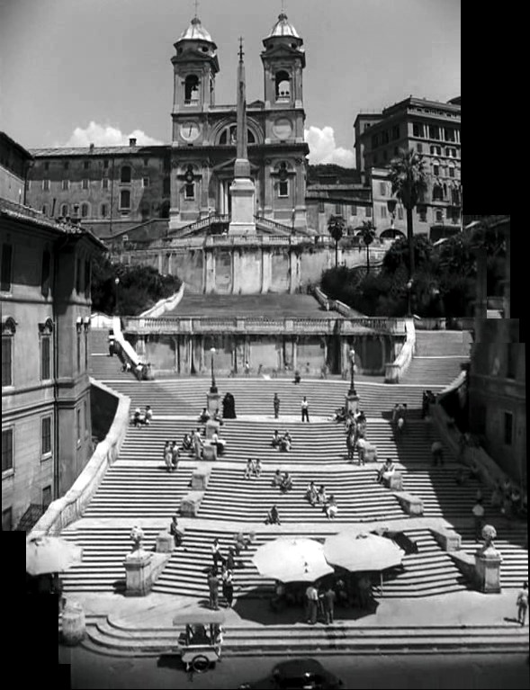
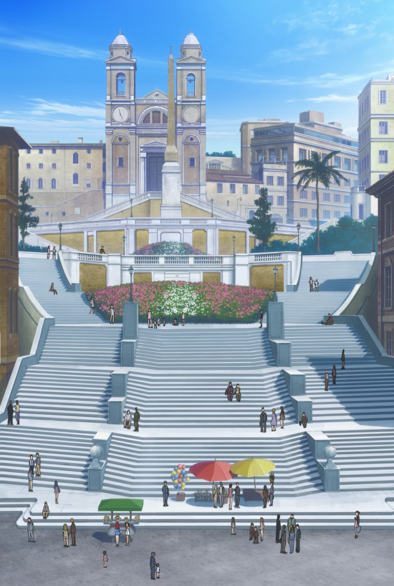

Back
-

-
The comfy bit of Strike Witches 2's 5th episode is a reasonably close recreation of the 1953 film "Roman Holiday", starring Gregory Peck as Ensign Francesca Lucchini and Audrey Hepburn as the Dutchess of Romagna.
-
The plots are roughly the same, a member of royalty escaping, bumping into the POV character, and having a fun day relaxing.
-
The dress worn by Ann at the start of the film is almost the same as that worn by Dutchess Maria at the end of the Strike Witches episode.
.00.04.07.jpg)

-
Same pan down the Spanish Steps. The music cues for this scene are incredibly similar.


-
At the base of the steps, Lucchini and Maria both stop for Gelato in the same place.
.01.02.03.jpg)

-
Not exactly the same scene, but neither character has any idea about how money works. Lucchini fares better, thanks to her massive bag of money. Poor Anne only has pocket change, which the vendor doesn't bother accepting. He does give her a nice flower, though.
.01.02.58.jpg)

.01.03.07.jpg)

-
The old "the Mouth of truth ate my hand" gag is recreated faithfully.
.01.19.29.jpg)

.01.19.36.jpg)

.01.19.37.jpg)

-
They stop at Trevi fountain.
.00.56.47.jpg)

-
And the Colosseum.
.01.14.20.jpg)

-
Both groups are sitting outside restaraunts near the Pantheon. It appears that Miyafuji and Shirley are sitting at the site of Napoletano's Pantheon, while Ann and Joe are sitting on the corner now occupied by a clothes store named Replay
.01.12.38.jpg)

-
Not strictly canon, as it doesn't appear in the episode, but it seems both iterations of the Princess/Dutchess character have the same frilly handkerchief.
.00.08.39.jpg)

-
Weird bonus, the girl on the right here is named Francesca.
.01.12.35.jpg)